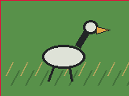

Demo 01 - Waterbirds Shortcut Proxy
A classifier can look accurate on average while failing crossed label/background groups.
- Model
- Deterministic habitat shortcut classifier compared with a bird-shape intervention.
- Intervention
- Use the bird silhouette and re-test with background swaps.
- Caveat
- Synthetic fallback, not the prepared Waterbirds benchmark path.
- Worst-group evaluation
- Habitat evidence box
- Bird-region evidence box